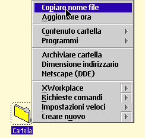

Selezionando "Copiare nome file" senza tenere premuto il tasto "Maiusc", &xwp; copia soltanto il nome del file.
Mantenendo premuto il tasto "Maiusc" mentre si seleziona l'opzione "Copiare nome file", &xwp; copia l'intero percorso, comprendente la lettera identificativa di unit…, il percorso al file e il nome del file stesso.
Supponendo che la cartella nella schermata vista sopra risieda sulla Scrivania, l'opzione "Copiare nome file" copier… "C:\Scrivania\Cartella" negli Appunti, se si tiene premuto il tasto "Maiusc", altrimenti soltanto "Cartella".
Quest'operazione ora (V0.80) funziona anche se si selezionano pi— oggetti nella cartella: i nomi file degli oggetti selezionati saranno tutti copiati negli Appunti, separati da spazi.
&xwp; definisce inoltre Ctrl+Ins come tasto rapido di cartella predefinito per copiare i nomi file degli oggetti correntemente selezionati.
La funzione pu• essere disabilitata e le scorciatoie da tastiera possono essere cambiate
dal'oggetto Impostazioni &xwp;.